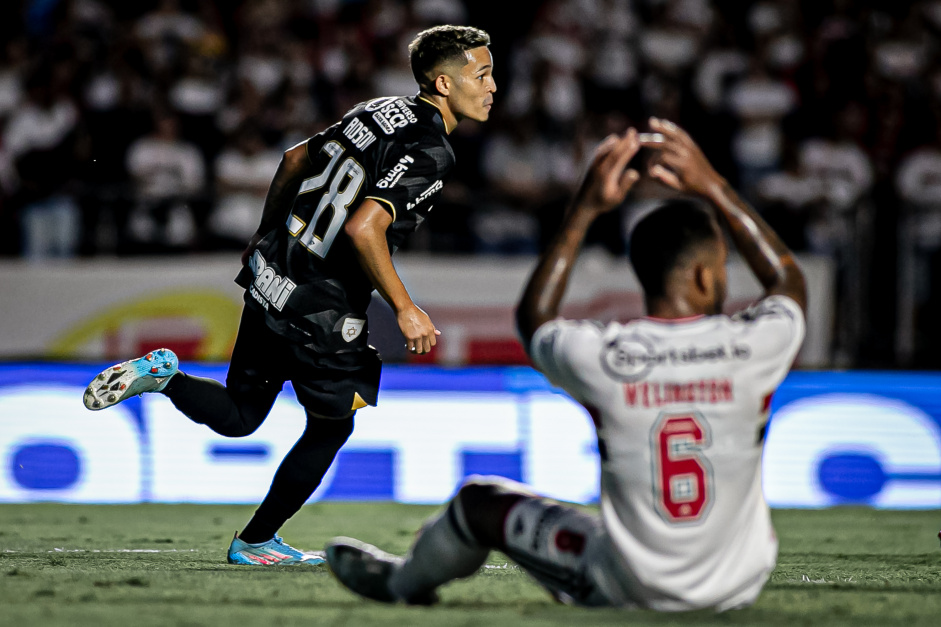
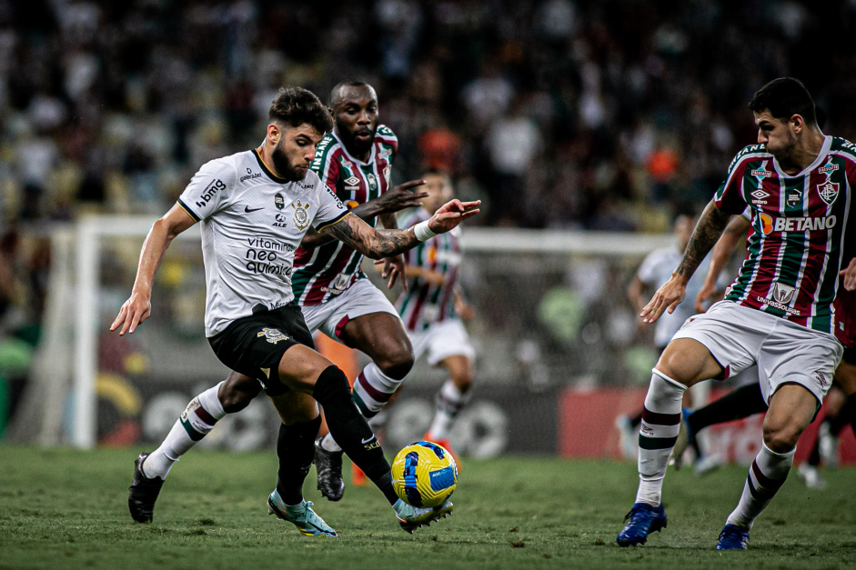

Sport Club Corinthians Paulista, popularmente conhecido como Corinthians, é um dos clubes de futebol mais emblemáticos e apaixonados do Brasil. Fundado em 1910, em São Paulo, suas cores preto e branco simbolizam uma das maiores torcidas do país. Com um histórico de conquistas notáveis, incluindo títulos nacionais e internacionais, o Corinthians é muito mais do que um time de futebol; é um símbolo de identidade e paixão que une milhões de torcedores apaixonados.
A Fiel Torcida, como é chamada a base de fãs corinthiana, enche os estádios com entusiasmo e lealdade, criando uma atmosfera única. Além de suas conquistas esportivas, o Corinthians também desempenha um papel relevante na comunidade, participando ativamente de projetos sociais e culturais que refletem seu compromisso com a sociedade. Assim, o Corinthians transcende o campo de jogo e permanece como uma parte vital da cultura esportiva e social do Brasil.
Melohor jogador:renato augusto
o mais velho:fábio santos
maior artilheiro do corinthians 2023:Róger Guedes
 